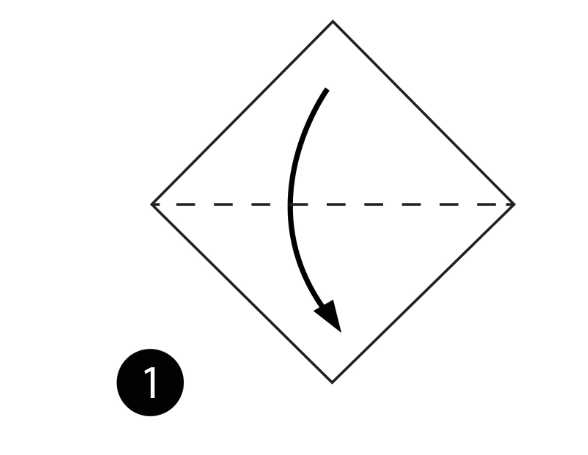
STEP1: Fold paper in half
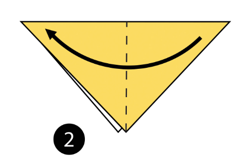
STEP2: Fold paper in half again
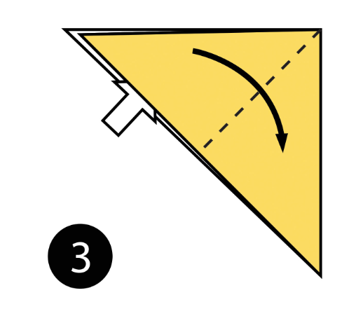
STEP3: Open the top flap of paper over to the right
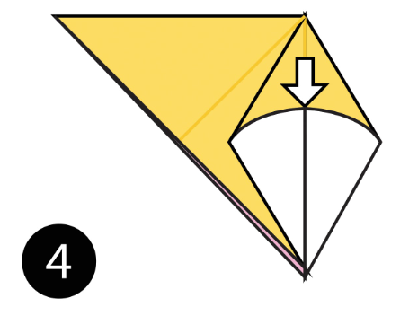
STEP4: Squash Fold this flap down.
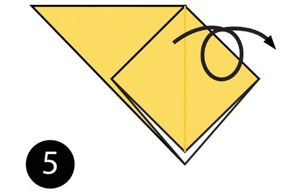
STEP5: Turn the paper over.
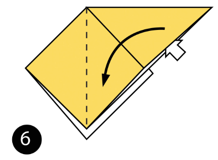
STEP6: Open the top flap of paper over to the left and Squash Fold it down.
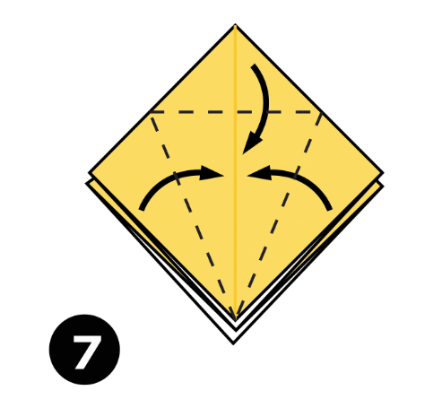
STEP7: Fold and Unfold the sides and the top along the dotted lines. You’ll use these creases in the next step.
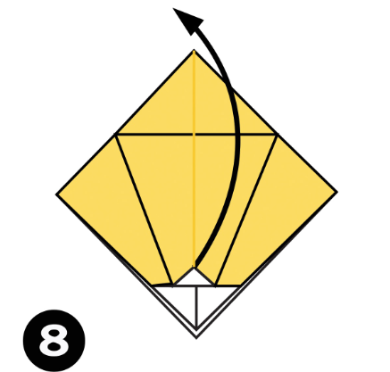
STEP8: Open up the top layer of paper and fold it up using the crease from the previous step.
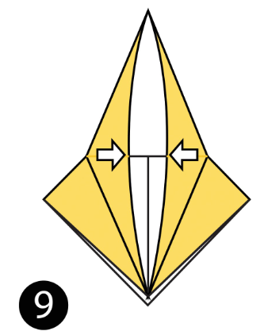
STEP9: Fold in both sides along the existing creases making a Petal Fold.
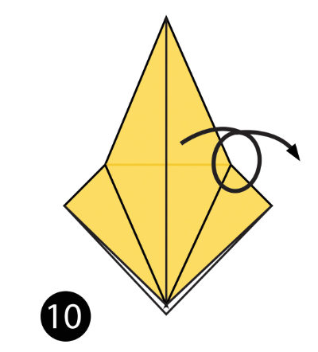
STEP10: Turn the paper over.
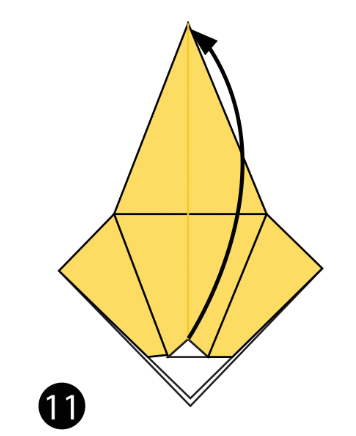
STEP11: Repeat steps 7-9 on this side.
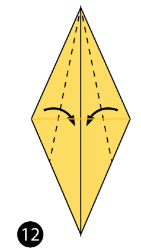
STEP12: Fold both sides to the centre along the dotted lines. Then repeat on the other side.
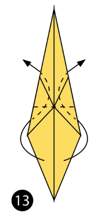
STEP13: Inside Reverse Fold up both sides of the paper
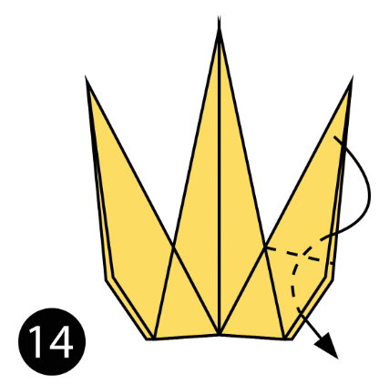
STEP14: Reverse Fold the back part down to make the back legs.
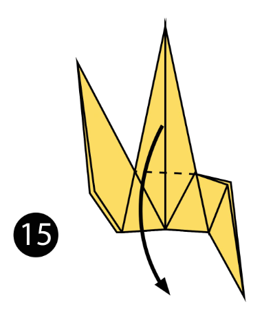
STEP15: Fold the top flap of paper down and repeat on the other side to make the front legs.
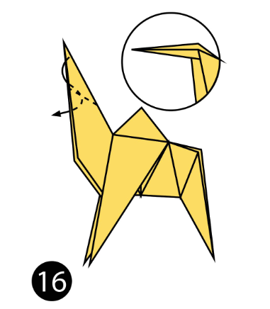
STEP16: Reverse Fold the tip down to make the head.
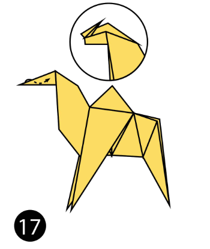
STEP17: Inside Reverse Fold the tip of the head.
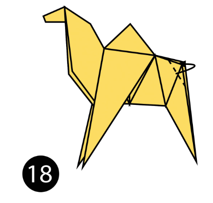
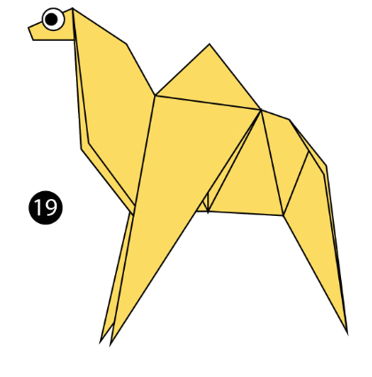
STEP18: Fold the back of the leg inside the model along the dotted line. Repeat on the other side.
STEP19: The completed camel
here is a vedio for your reference